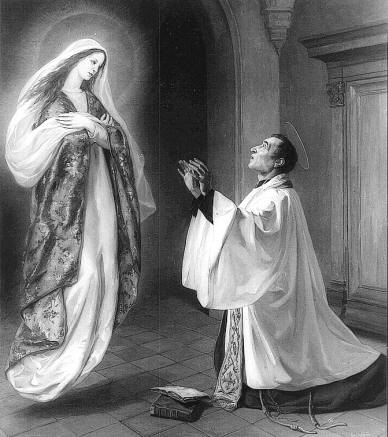
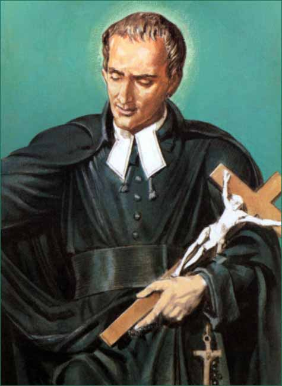
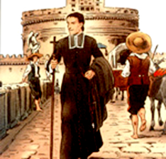
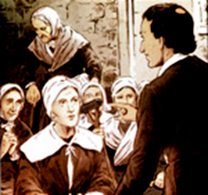
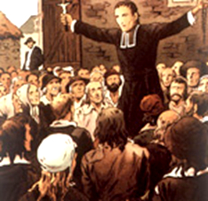
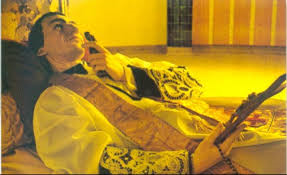
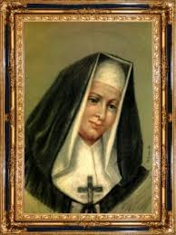
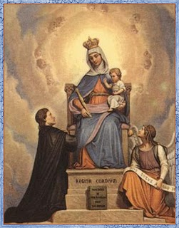

ORIGEM DA SANTA ESCRAVIDÃO
Já existia em sua época a
denominada “Santa Escravidão
a MÃE DE DEUS”, que era o exercício permanente
da total dependência da MÃE DO SENHOR. 
Muito embora esta prática devocional não fosse uma novidade, por que muitos Santos, como o Cardeal Bérulle, Olier, Poiré, Boudon e muitos outros, a praticaram e a ensinaram em tempos passados, Luís Maria é o herdeiro, e foi em Paris que a devoção tomou pleno desenvolvimento e recebeu uma forma definitiva, com instruções e orientações amorosas para o perfeito cultivo da “Santa Escravidão”.
São Bernardo de Claraval falou: “Eu sou um vil escravo, para quem, é suma honra ser o servo do FILHO e da MÃE”; e Santo Ildefonso também disse: “Para ser o devoto escravo do FILHO, quero ser o escravo fiel da MÃE”.
Luís Maria estudou e apresentou fórmulas claras e precisas, simplificando a doutrina dos autores anteriores, eliminando o que era muito abstrato ou indeciso, e deixou os ensinamentos ao alcance de todos. Desse modo, escolheu o que no seu entender seria o melhor, que unido a sua experiência pessoal, formou o conjunto primoroso da devoção, que constitui o seu “Tratado”.
Deste modo, “a Santa Escravidão” deixou de ser uma simples Consagração, mais ou menos exterior, para tornar-se uma devoção perfeita, sob uma forma admirável, que aperfeiçoa e transforma as almas. Tornou-se uma verdadeira “Escola de Santidade”.
A SANTA ESCRAVIDÃO

Este é o estado de vida que São Luís Maria Grignion de Montfort deseja para todos os devotos da VIRGEM MARIA. É na verdade, uma consagração do corpo e do espírito, ou seja, da pessoa integral, dos bens exteriores e das boas obras, traduzindo uma submissão completa, uma abnegação contínua da própria vontade, para fazer a Vontade da “SANTISSIMA MÃE DE DEUS”.
Entretanto, é importante observar que o título de escravo não exclui este nome suave de “filho”, que todos nós somos e que buscamos de modo carinhoso e amorosamente MARIA SANTÍSSIMA, que é “Nossa Mãe e Senhora”. Então devemos ser ao mesmo tempo: “filhos” e “escravos”.
A habilidade que fazemos das nossas ações é verdadeiramente o dom de nós mesmos. Ao apresentar a VIRGEM MARIA a nossa oração nós estamos nos oferecendo a ELA, no ato tão singular e santo da oração. Assim sendo, as orações, assim como também todas as nossas boas obras, não podem ser separadas de nós, é fruto que emana do nosso interior, do nosso “eu”, é exercício da nossa alma, seja quando estamos suplicando, trabalhando, renunciando ou amando.
E sem a menor dúvida, uma alma que serve a MARIA SANTÍSSIMA deste modo, está plenamente dentro do espírito da “Santa Escravidão”.
Ensina São Luís que existem vários graus a serem percorridos a fim de podermos alcançar a intensidade ideal da “Escravidão”. Mas, se o “ideal” está muito distante das nossas possibilidades, deve ser buscado, pelo menos, um “estado habitual”, ou seja, aquele estímulo que podemos alcançar diariamente para melhor e mais fervorosamente servirmos a nossa MÃE SANTÍSSIMA.
O caminho para o fiel melhor se realizar na “Santa Escravidão”, é através do DIVINO ESPÍRITO SANTO, conseguindo DELE a necessária inspiração e, que ELE também revele o segredo e nos estimule na estrada escolhida. Assim, sob o impulso do ESPÍRITO SANTO, o fiel há de subir de virtude em virtude, de graça em graça, até chegar à transformação de si mesmo em JESUS CRISTO.
O Padre Luís Maria,
em todo local por onde passava, pregava sobre a VIRGEM MARIA, sua boa e carinhosa
MÃE SANTÍSSIMA, ensinava a Santa 
De um modo geral, a síntese do seu ensinamento se concentrava na expressão: “Só DEUS" , ou “somente DEUS”, que também se expressava pela frase: “O puro amor de DEUS reine em nossos corações”.
O meio de se conseguir este objetivo é revigorando o espírito, pela renovação dos votos do Batismo, relembrando à luz da fé, que todos são o “bem”, a “propriedade” e os “escravos” de JESUS CRISTO.
Relembrar também a todos esta mesma dependência para com MARIA SANTÍSSIMA, pois a ELA compete, “pela graça”, tudo quanto compete ao seu DIVINO FILHO “pela natureza”.
De direito, o cristão é o escravo de MARIA. É preciso, pois, que o seja de fato. E isto se faz consagrando a alma, sem reserva, ao serviço de MARIA, vivendo numa completa submissão a NOSSA SENHORA.
O que se observa com evidência, é que São Luís de Montfort concebeu a humanidade alcançando o Reino de JESUS CRISTO através de MARIA, ou seja, fazendo com que a SANTA MÃE seja mais conhecida e amada, para fazer mais conhecido e amado NOSSO SENHOR JESUS CRISTO.
Antes, porém, de publicar “O TRATADO DA VERDADEIRA DEVOÇÃO À SANTÍSSIMA VIRGEM MARIA”, ele quis submetê-lo a apreciação do Papa. Foi a Roma e solicitou a aprovação do Papa Clemente XI. Este, inspirado por DEUS, propôs ao Santo Missionário e a sua Doutrina como um antídoto certo, um remédio necessário contra os erros hipócritas divulgados pelo jansenismo.
A bênção do Santo Padre estimulou mais o zelo de Montfort. E até a sua morte, com ardor incrível, cumpriu a sublime missão de "levar as almas a JESUS CRISTO através de MARIA".
Padre Grandet, contemporâneo do Padre Montfort acrescenta um pormenor importante sobre os efeitos maravilhosos que esta devoção produziu nas almas mais aviltadas: “Conheci um grande número de pecadores escandalosos, aos quais ele ensinou esta devoção, bem como à prática de rezar diariamente o Rosário. Todos se converteram completamente, e tornaram-se exemplos de vida. É incontável o número de pessoas de ambos os sexos que ele fez mudar de vida por este meio”.
A PREGAÇÃO

Ele é, verdadeiramente, o Padre de MARIA SANTÍSSIMA. Sua pessoa, sua ciência, sua virtude, sua eloquência, tudo está ao serviço da excelsa “Rainha do Céu”. “Apenas havia começado a obra das missões – disse o Padre Bernardo – logo se anuncia como um dos mais ardentes defensores da glória de MARIA SANTÍSSIMA”.
Quantos assistiram a seus sermões sobre NOSSA SENHORA asseveram que ele se ultrapassava a si mesmo, tudo nele era grande e sublime.
O segredo do grande missionário é o seguinte: "O SAGRADO CORAÇÃO DE JESUS não reinará plenamente nas almas senão quando as encontrar inteiramente consagradas ao culto da DIVINA MÃE".
A missão de São Luís Maria Grignion de Montfort era estabelecer o reino de MARIA, para estender o Reino de JESUS CRISTO.
É o que nos garante o seu “Tratado da Verdadeira Devoção” . Este livro não é uma obra longamente preparada no silêncio dum gabinete de trabalho, para se apresentar depois como surpresa aos leitores ávidos de novidades. É o resumo da pregação de Montfort. Antes de colocar as suas idéias no papel, o Santo Missionário já as havia pregado centenas de vezes.
Lendo este livro sentimos logo a ausência de qualquer esforço de composição por parte do autor. Este possui inteiramente o assunto, escreve ao correr da pena, sem emenda, sem repetição, ou, melhor, escreve o que continuadamente falava desde anos.
Ele mesmo afirmava: “Pego da pena, para escrever o que ensinei em público e em particular, nas minhas missões, durante longos anos”.
E qual era o assunto desta pregação? Podemos julgá-lo pelos dois grandes cadernos de sermões que deixou, e que ficam conservados em São Lourenço – em Sèvre – como preciosas relíquias.
No primeiro caderno São Luís enumera os motivos da devoção a esta “boa MÃE”: a glória de DEUS, nosso interesse, as vantagens, etc. – “Nullus cliens Mariæ peribit” (traduzindo): “Nenhum devoto de MARIA SANTÍSSIMA perecerá” (não perecerá no inferno).
O segundo caderno
é exclusivamente consagrado a NOSSA SENHORA, é na verdade, um amplo repertório de
notas de uma grande coletânea de sermões. 
São Bernardo, Santo Anselmo, São Bernardino, Santo Antonino, Guilherme de Paris, o Padre Guerric, Poiré, e outros, que trazem valiosa contribuição a estas notas. O Mestre, entretanto, deixou ali os seus caracteres. Planos, divisões, pensamentos salientes, reflexões pessoais, tudo deixa entrever suas preferências e nos indicam a orientação de seu zelo.
No fundo é o mesmo tema do Tratado da Verdadeira Devoção: as excelências da devoção, os motivos, as características da Verdadeira Devoção, as práticas, e, a perfeita Consagração de si mesmo a VIRGEM MARIA.
“A Santa Escravidão de MARIA” é o ponto culminante do ensino do Santo Apóstolo e o grande meio por ele preconizado para se obter o Reino de JESUS e da sua SANTA MÃE.
Para espalhar esta verdade, Montfort empregou todos os recursos de seu espírito e todas as forças de seu corpo. Pregou sua querida devoção até no túmulo, no local onde quer ser sepultado com as correntes de ferro, que são o testemunho da sua escravidão.
Na sua vida missionária aconteceram fatos os mais estranhos, ilustrado por situações que costumavam ocorrer nos seus trabalhos, quase sempre estimulados pela malquerença, pela inveja e pelo ódio dos inimigos da Igreja.
Em janeiro de 1716 encerrou-se a missão em Villiers-en-plaine, empreendimento que deu ao Santo pregador grande motivo de alegria. Para tal concorreu o bom exemplo dos chefes locais, o senhor e a senhora d’Orion. Esta, a princípio, estava um pouco cética, acreditando nas calúnias espalhadas contra Montfort, e por isso, hesitara em seguir os exercícios da santa missão. Mas, por temor de um escândalo público decidiu-se a comparecer, mais por curiosidade do que por convicção e piedade, apenas disposta a ver as denominadas “palhaçadas do missionário” e a rir a bom gosto. São Luís Maria e seus companheiros eram hóspedes da sogra da senhora d’Orion e ela então, pôde observar bem de perto, a pessoa do Santo e a sua conduta.
E assim, ela pode comprovar a realidade que mostrou claramente o quão era falsa a descrição que faziam do trabalho do Padre Montfort, totalmente inspirada pelo ódio, pela inveja e o despeito. Diziam que era um sacerdote ridículo, extravagante e indiscreto! Ela, porém, contemplava naquele momento um sacerdote de rara modéstia, de esmerada polidez, de admirável bom senso, respeitoso com todos e afabilíssimo para com os pequenos e humildes; não um severo e impertinente censor de defeitos, mas um padre bondoso, indulgente para com a fraqueza alheia, sempre sorridente, manso mesmo em suas necessárias repreensões. E numa oportunidade, encontrando ela o momento propício para mandar os serventes arrumar o quarto do Santo, pode ver de perto os seus terríveis instrumentos de penitência. E assim, ao invés do desprezo sucedeu uma verdadeira admiração.
MORTE E SEPULTAMENTO

Rodeado por seus mais íntimos amigos, sequiosos por receber a sua última bênção, Padre Luís Maria com o crucifixo que trouxe de Roma, traçou sobre eles o Sinal da cruz. A seguir, com grande carinho e amor beijou longamente o crucifixo, pronunciando com voz baixa os nomes de JESUS e MARIA. E assim exalou o seu último suspiro, sua alma puríssima foi para a eternidade no dia 28 de Abril de 1716, em Saint-Laurent-sur Sèvre.
Milhares de pessoas se reuniram para o seu enterro na Igreja Paroquial. Depois, ao redor do seu túmulo, fiéis rezavam fervorosamente invocando o auxílio do Padre Montfort, suplicando sua intercessão junto a DEUS, a fim de conseguirem benefícios necessários as suas vidas. E logo, desencadeou cenas admiráveis, surgiram várias histórias emocionadas, que descreviam milagres acontecidos pela bondade infinita e misericordiosa de NOSSO SENHOR, atendendo a intercessão atenciosa do Padre Luís Maria Montfort.
O Papa Leão XIII o beatificou no dia 22 de Janeiro de 1888 e foi canonizado no dia 27 de Julho de 1947 pelo Papa Pio XII, que na sua homilia disse: "Só DEUS era tudo para ele. Devemos permanecer fiéis à herança preciosa que nos deixou este grande Santo”.
Por isso mesmo, séculos mais tarde, através dos seus preciosos escritos, ele influenciou quatro papas (Papa Leão XIII, Papa Pio X, Papa Pio XII, e Papa João Paulo II), e agora está sendo considerada a possibilidade dele ser reconhecido como doutor da Igreja.
O Papa João Paulo II recordou que quando ainda era jovem seminarista "leu e releu muitas vezes e com grande lucro espiritual" um dos trabalhos de Montfort, e disse ainda: "Então percebi que eu não poderia excluir a MÃE do SENHOR da minha vida, sem obscurecer a Vontade de DEUS-TRINDADE”.
O túmulo do santo, a sua casa e os locais em que viveu são agora alvo das muitas peregrinações, com cerca de 25.000 visitantes por ano. A casa em que ele nasceu é a de número 15, na Rue de la Saulnerie em Montfort-sur-Meu. Agora, é propriedade conjunta das três congregações Montfortianas que ele formou: os Missionários de Montfort, as Filhas da Sabedoria e os Irmãos de São Gabriel, que cresceram e se espalharam por todo o mundo. Também é muito bonita a Basílica de São Luís Maria Grignion de Montfort em Saint-Laurent-sur-Sèvre que tem uma estrutura impressionante, atraindo milhares de peregrinos a cada ano.
O Santo é apresentado com o crucifixo sustentado na mão esquerda. Com o pé direito ele pisa a cabeça de satanás representado em figura humana, tentando destruir um livro sobre o qual se lê o título: “Tratado da Verdadeira Devoção”. O semblante do Santo é sereno. Ele olha o demônio e parece dizer-lhe: “Em vão; tu não o destruirás!” A mão direita está estendida e um pouco elevada, apontando o céu num gesto de confirmação daquilo que ele parece nos dizer, isto é, a certeza da vitória sobre o demônio.
QUEM ERA MARIE LOUISE TRICHET
Aos 17 anos de idade
ela se encontrou pela primeira vez com o Padre Luís Marie de Montfort, que era capelão
no Hospital de Poiters, onde já era bem 
Ainda no ano de 1714, sob a orientação do Padre Luís, e junto com ele fundou a Congregação das Filhas da Sabedoria, como co-fundadora, na companhia de Catherine Brunet. O projeto da Congregação foi consolidado no dia 22 de Agosto de 1715, com a adesão de mais duas companheiras: Marie Valleau e Marie Régnier de La Rochele. As quatro jovens receberam a aprovação do Bispo Champflour de La Rochele, para desempenhar a profissão religiosa sob a direção do Padre Luís Maria Grignion de Montfort. E em seguida, numa cerimônia simples mas repleta de amor, Padre Luís lhes falou: “Liguem-se e formem com decisão e coragem, as FILHAS DA SABEDORIA, para o ensino das crianças e o cuidado com os pobres”.
Depois que o Padre Luís deixou Poitiers, Marie Louise Trichet (ou Maria Luísa de Jesus), permaneceu durante dez anos no Hospital, se consagrando com imenso carinho e extremosa dedicação aos pobres e enfermos. Desempenhou com a maior perfeição possível, o seu humilde trabalho de cuidar dos inválidos, assumindo todas as responsabilidades à frente dos diversos serviços.
Padre Montfort deixou uma cruz que ficou célebre, e hoje está colocada no centro do hospital. Marie Louise levava uma cruz sobre a sua túnica cinza, bem em cima do seu caridoso coração e ela também, conduziu a sua cruz até os seus últimos momentos da sua vida. Dia a dia realizava o seu esgotante trabalho, enfrentando todas as dificuldades inerentes ao serviço, e depois, também pela ausência e diminuição do número das companheiras. E sofreu ainda muito mais, com a dura e triste perda que teve, com o falecimento das suas irmãs e do seu irmão, um jovem sacerdote cheio de vida e de entusiasmo vitimado por sua extremada abnegação, todos eles mortos pela abominável epidemia de peste.
No ano seguinte (1716), morreu prematuramente Padre Louís Marie Grignion de Montfort, com a idade de 43 anos. Este fato, a princípio, desestabilizou a jovem Congregação, que foi duramente abalada por esta notícia tão dolorosa, quanto inesperada. Mas foi neste momento que ela encontrou forças para reerguer o ânimo de todos, lembrando-se da frase escrita pelo Padre Luís: “Se não se arrisca algo por DEUS, nada de grande se conseguirá fazer por ELE”.

Os pobres do hospital de Nior (em Deux-Sèvres) a chamavam de “A boa Madre JESUS”. Esta pequena frase expressa tudo a respeito de Marie Louise! Seu lema de vida era muito simples: “É necessário que eu ame a DEUS ocultamente, em meu próximo” (frase que o Padre Louís Marie de Montfort utilizou colocando-a no coro de um cântico que ele compôs, destinado às Filhas da Sabedoria).
Quando ela morreu em Sant Laurent sur Sévre, no dia 28 de abril de 1759, a Congregação contava com 174 religiosas, presentes em 36 comunidades e mais a Casa Mãe. Seu projeto cresceu e se tornou uma “Organização Internacional”, presente em cinco continentes, exercitando e divulgando o Amor de DEUS na prática incansável de atendimento aos pobres e aos mais necessitados onde estivesse. São Louís Marie Grignion de Montfort e a Beata Marie Louise Trichet, fundadores da Congregação, descansam juntos, na Igreja paroquial de São Lourenço, em Saint-Laurent-sur-Sèvre.
No dia 16 de maio de 1993, Marie Louise Trichet (de Jesus), foi beatificada pelo Papa Joao Paulo II, em Roma. O Sumo Pontífice no dia 19 de setembro de 1996 também esteve em Saint Laurent sur Sévre, onde rezou junto às sepulturas de São Luís Maria Grignion de Montfort e da Beata Maria Luisa de Jesus.